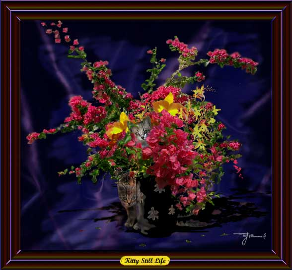

Kitty Still Life. Paintage, airbrush, oil. Bucky's three kittens pictured in Gallery 2 are now included here as part of a flower still life. The mass of red flowers are bougainvillea.
Next
painting.
Return
to Gallery 3
Home